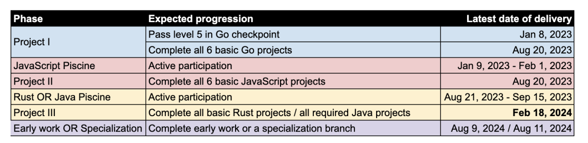

This is what the result of the student who took second place, according to the administration’s calculations, looks like.
Name: Sergei Ivanov.
August 17, 2023

August 22, 2023

This document was created from February 15 to February 18, 2024. Google services were used in the creation process.
The document was compiled by Sergei Ivanov, at the time of writing, a gritlab student.
Age: 40 years old. The level of education: PhD (Candidate of Engineering Sciences) mechanical engineering(automotive industry). The dissertation is not defended. This is the base formulas list ( https://healingdrawing.github.io/0/a/ ) from dissertation.
Has experience working as a teacher at a technical university.
Also has not completed university education in "Management of personal". Has Certification in area of digital education technologies. Has Certification in testing of software.
Additional information can be found in linkedin.com account(see below).
This document describes examples of behavior of some students and staff of the
grit:lab (https://gritlab.ax),
whose actions may have an impact on the reputation of the
Paf (https://www.paf.com/en)
as well as reputation of the
Ålands yrkesgymnasium (https://www.gymnasium.ax/alands-yrkesgymnasium).
- Sergei Ivanov (https://www.linkedin.com/in/healingdrawing)
- Malin Oscarius (https://www.linkedin.com/in/malin-oscarius-1bba9a2a2)
Local resident, gritlab student, and at the same time an employee of Paf for many years.
- Tommy Mathisen (https://www.linkedin.com/in/tommy-mathisen-162bb9296)
Local resident, gritlab student.
- Dick Carstens https://www.linkedin.com/in/dick-carstens-a404a265
Gritlab student.
- Sagar Yadav (https://www.linkedin.com/in/sagaryadav)
Gritlab student.
- Jere Salminen (https://www.linkedin.com/in/jere-salminen-aa04b218a)
Gritlab student.
- Korin Lim (https://www.linkedin.com/in/korinlim)
Gritlab student.
If you have extensive experience with people talented in science or the arts, such as mathematics, physics, chemistry, drawing, music, you know that talented people can often have unusual differences in behavior.
This may be a result of their brains working differently than the average person's brain. In this case, it is important to help them behave appropriately in public places. The educational campus is a public place.
Responsibility for the behavior of students on campus lies with the management and the students. Without competent management actions, it is impossible to provide a comfortable environment for mental work when within the community there are participants with undesirable behavioral traits.
In 2022, I noticed inappropriate behavior by gritlab students on campus, inside the Paf building. In a gentle manner, I asked the administration how they were going to provide proper conditions for mental work on the campus in the Paf building? I also raised the possibility of installing surveillance cameras to remind visitors of the rules of behavior. After that, I voiced some examples of inappropriate behavior and pointed out what was happening at the moment. In response, the gritlab administration told me that this was unnecessary, everything was going well anyway.
Repeatedly, I personally observed (and also heard stories from other students) the following actions on the campus:
- loud, demonstrative belching.
- farting loudly in front of other students.
- food, dirt and drinks, as well as empty dirty glasses left on tables with expensive equipment, at student workplaces.
- trash and dirty dishes were left at other students' workplaces (several times at my usual work place, dirty coffee glasses and food marks were left).
- demonstrative lifting of legs on the table, sitting on a chair and wearing dirty shoes or smelly socks(without shoes).
- masturbation (this is not a mistake, I observed this personally and later heard from other students about the repetition).
- as well as little things that are not worth mentioning.
Below is some information about the actions inside gritlab. There is more additional information. As well as a large amount of unconfirmed information (something that I did not personally observe). I also cannot put pressure on students and force them to participate in the creation of this document. Some of them look and behave to me like people with mental disabilities. My opinion is based on their behavior (actions, words, the difference between actions and words...).
The information is divided into four sections for easy visual navigation.
In the summer of 2023, on the recommendation of Malin Oscarius, without an interview or knowledge test, Tommy Mathisen was hired for a paid summer internship at Paf.
Malin Oscarius told me personally that she has known Tommy for many years and that she likes him as a person, and he helped her many times. She did not specify the details.
The announced curriculum outline looks like this:

After the end of the next stage of training on August 20, 2023, students with the current best performance were identified (according to the administration's calculations).
In first place was Malin Oscarius.
In second place was Sergei Ivanov.
In third place was Sagar Yadav.
And these are screenshots of the progress.
This is what the result of the student who took second place, according to the administration’s calculations, looks like.
Name: Sergei Ivanov.
August 17, 2023
August 22, 2023
In my opinion, the administration’s actions are a manipulation of statistics. In other words, it's a scam.
On August 21, 2023, at 9.30 a.m., an event began in honor of the start of the next part of the training (piscine rust/java).
At the event, the administration publicly named Malin Oscarius the best student based on the results of the completed part of his studies.
In my opinion, the actions of the administration are:
- misinformation of a large number of students (except for those who saw my progress).
- public belittlement/insult of my achievements and slander (calling me a runner-up student).
The situation is not like a calculation error, since the computer is a precise calculation tool.
It is also clearly visible in the screenshots that there are empty slots between the first place and the second place, which eliminate the possibility of errors in visual assessment.
After the actions described above on the part of the gritlab administration, when the administration showed me that they did not want to see me in first place, I lost additional motivation.
I decided to just try to continue learning: do the minimum, complete the course (without trying to achieve the best results), and then move on.
The screenshot below shows my progress at the time of writing the document
, February 15, 2024
.

In September 2023, after the end of piscine rust (or piscine java, depends on students choice), the gritlab administration consistently implemented the following actions, showing the level of management:
- add java branch as new part of the curriculum to satisfy potential Paf needs, but did not separate the auditors for the projects according to learned programming language.
So the student who learned rust must audit(evaluate quality) java code which he can not even explain properly, and vice versa, for the students who learned java and forced to audit rust code.
Without audits you can not progressing properly, because audit ratio requires to make audits, otherwise you can not submit new project.
Also you can just wait up to audit list will be refreshed after week or two, with 50% chance to have not desirable programming language again.
Until the project audit is completed properly, you can not have another project to audit.
After these changes above, according to my opinion, student can be locked per weeks or forced to make low quality stuff.
- administration allows to make two branches in same time java and rust.
The permission to make two branches in same time was announced after the end of piscine.
Therefore, according to my opinion, this change may cause impure interest within the micro-society. F.e. this situation can potentially increase the level of scam and copy paste(to earn more xp points or satisfy personal/subjective needs), instead of make one branch properly. Yes, i mean greed and fame.
I personally informed administration about my opinion after announcement. Administration said, that it is not a problem, and everything will be ok.
- several weeks later, on the special event, administration announced that audits quality became worse, as if it were the students' fault.
- announcement that, periodically, all the students will be randomly forced to pass superaudit under the control of administration.
I do not have confirmed information about the gritlab administration qualified enough to do that properly. System administrator is not a java+rust programmer, at all.
So, according to my opinion, it looks like a different type of the same quality process(without detectable improvements) + increasing of the tension in micro-society, using mental pressure.
In the middle of January 2024, Tommy Mathisen misinformed a group of students.
As a result of the deception, a group of students that included Tommy Mathisen did not allow to pass the working project "localhost". After that, all students from the group that tried to pass “localhost” received penalty points (audit ratio decreases after failure). One of the students was Sagar Yadav.
A few hours later (from professional developers from the rust programming language forum), official confirmation and explanation was received that the information spread by Tommy Mathisen was false.
The next day the project was successfully completed after trying again. But the penalty points were not cancelled.
Later, when the administration received information about this incident, the administration did nothing.
On January 31, 2024, closer to 4p.m., Tommy Mathisen and Dick Carstens tried to force Korin Lim to break the rules and simulate an audit of the "multiplayer-fps" project in order to get the coveted audit ratio points. According to the rules, the group is represented by the captain. The group captain invites auditors and agrees with the auditors when to audit the project.
In the Korin Lim group, for the "multiplayer-fps" project, the captain was Sergei Ivanov. At the time of the incident, Sergei Ivanov (the author of this document) was in another building and was engaged in planned activities, and also planned to visit the gritlab training center closer to 7p.m.
Tommy Mathisen and Dick Carstens were not invited to the audit.
On January 31, 2024, on the territory of the gritlab training center, the following actions were performed within two hours:
- Tommy Mathisen and Dick Carstens, on their own initiative (no one called them), surrounded Korin Lim's workplace.
- without Korin Lim's consent, they began to view private information on Korin Lim's computer screen.
- Tommy Mathisen and Dick Carstens began insisting that Korin Lim organize an audit for them, without the prior consent of the team and without an invitation from the team captain.
- when Korin Lim said that she felt uncomfortable with them standing nearby and looking at her personal information without an invitation, and also asked them to leave her workplace, the uninvited visitors ignored Korin Lim's request and continued to annoy and distract Korin Lim.
- after that, Tommy Mathisen and Dick Carstens tried to force Korin Lim with the help of misinformation from the administration. Dick Carstens entered the administration room and began in a high-pitched voice, saying that the “multiplayer-fps” project, a group that includes Korin Lim, violates the project requirements described in the assignment and does not meet the audit requirements.
- an administration representative checked the project. As a result of the inspection, the administration representative said that the project does not violate the terms of the assignment and complies with all audit questions. The attempt to slander the project failed.
- After reviewing the project and confirming that the project complied with all requirements and all mandatory audit questions were satisfied, Tommy Mathisen and Dick Carstens began to demand from Korin Lim that all team members come to the academic building as quickly as possible to satisfy their desire to audit the project, and get valuable audit ratio points. Let me remind you that none of them were invited to the audit.
- After this, the administration representative sets a condition for Korin Lim's team. If the captain does not appear on campus within an hour and does not satisfy the demands put forward by Tommy Mathisen and Dick Carstens, then perhaps the project of the team that includes Korin Lim will undergo additional scrutiny(an additional unscheduled superaudit will be assigned under the supervision of the administration).
- Using the internet messenger discord, I (Sergei Ivanov, group captain) replied that I plan to visit the gritlab training center closer to 7p.m., in accordance with my personal schedule and I am not interested in the demands of outside students whom I did not invite to the audit.
- After this, a representative of the administration appointed an unscheduled superaudit for the group that includes Korin Lim. Superaudit was successfully completed on February 2, 2024.
Jere Salminen and Sagar Yadav were witnesses to the events described above. They were in the training center and observed everything personally.
The administration is inactive regarding students Tommy Mathisen and Dick Carstens.
In my opinion, the actions committed by Tommy Mathisen and Dick Carstens resemble the following violations:
- slander towards other students (false information that the project violates the terms of the assignment).
- invasion of personal space and unauthorized access to private information on the computer screen of student Korin Lim.
- psychological pressure and refusal to leave the workplace Korin Lim (Tommy Mathisen and Dick Carstens were not invited and do not have the right to invade the personal information space of other students without an invitation). Each student's account is password protected.
- an attempt, for personal purposes, to force student Korin Lim to commit violations, namely, to simulate a project audit, to satisfy the personal needs of students Tommy Mathisen and Dick Carstens.
- misinformation to the administration by students Tommy Mathisen and Dick Carstens (a successful completed attempt to trick the administration into making the situation more difficult for other students through psychological pressure from the administration).
gritlab
___________________________ = ?
Drug Dealer x Casino Dealer